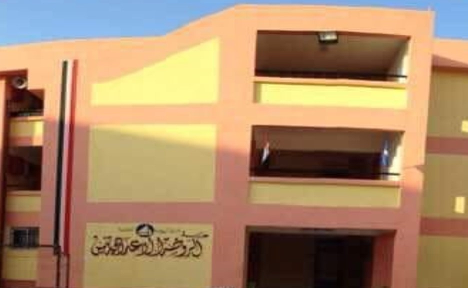

مــدرسة الــروضة الاعــداديـة بنــين
مجلة المدرســة
هيئــة التـدريس
الأنشطــة الطــلابية
وســا ئــط
اعلان النتائج
من ذاق ظلمة الجهل أدرك أن العلم نور
المفكر هو انسان قرأ و تعلم و جرب و وعى و فكر وعبر واستمر
من قال أنا عالم فهو جاهل
لا حسب كالتواضع، ولا شرف كالعلم
من فتح مدرسة أقفل سجناً
ثلاثة أمور تزيد المرء إجلالاً: الأدب، والعلم، والخلق الحسن
لا تطلب العلم رياءً، ولا تتركه حياءً
وسائل الثقافة هي: الفكر، واللغة، والكتابة
من عمل بما علم، أورثه الله علم ما لم يعلم
النجاح يحتاج إلى كثير من العلم والحكمة
رأس مالك هو علمك وعدوك هو جهلك
العلم في الصغر كالنقش على الحجر
علم بلا فعل كسفينة بلا ملامح
يرزق الله العلم السعداء ويحرمه الأشقياء
